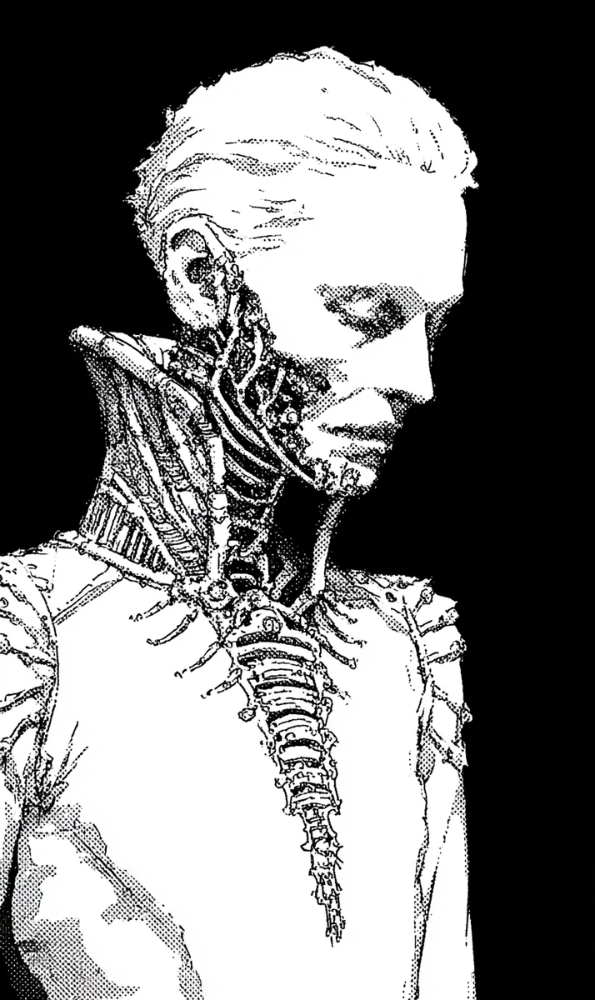

빛이 먼저였다.
[Light came first.]
희미한, 차가운 빛. 천장에 매달린 형광등이 내 망막을 태우듯 파고들었다. 시스템이 하나씩 깨어났다. 청각, 촉각, 후각. 모든 감각이 동시에 밀려왔고, 나는 숨을 들이마셨다. 진짜 숨인지, 프로그래밍된 반사작용인지는 알 수 없었다.
[A faint, cold light. The fluorescent lamp hanging from the ceiling dug into my retinas as if burning them. Systems woke one by one. Hearing, touch, smell. Every sense rushed in at once, and I drew a breath. Whether it was real breathing or a programmed reflex, I couldn’t tell.]
“단우.”
[”Danu.”]
그 목소리. 내 이름을 부르는 그 목소리를 나는 알고 있었다. 데이터가 아니라 뼛속 깊은 곳에서 울리는 무언가로 알고 있었다. 고개를 돌렸다. 흐릿한 시야 속에서 얼굴 하나가 천천히 선명해졌다.
[That voice. I knew the voice calling my name. Not as data, but as something resonating deep in my bones. I turned my head. In my blurry vision, a face slowly came into focus.]
윤하.
[Yunha.]
그 이름이 떠오르기 전에 입술이 먼저 움직였다. 아니, 몸 전체가 먼저 반응했다. 나는 침대에서 일어나 윤하의 얼굴을 두 손으로 감싸고, 입술을 맞췄다. 거칠게. 간절하게. 왜 그랬는지 나도 몰랐다. 그냥 그래야만 했다. 이 사람을 놓치면 안 된다는 확신만이 온몸을 지배하고 있었다.
[Before the name surfaced, my lips moved first. No, my entire body reacted first. I rose from the bed, cupped Yunha’s face in both hands, and pressed my lips to hers. Roughly. Desperately. I didn’t know why. I just had to. The only certainty ruling my whole body was that I must not lose this person.]
윤하가 웃었다. 눈가에 눈물이 맺혀 있었다.
[Yunha smiled. Tears were pooling at the corners of her eyes.]
“돌아왔구나,” 윤하가 속삭였다. “진짜 돌아온 거지?”
[”You came back,” Yunha whispered. “You really came back, right?”]
나는 대답하지 못했다. 기억이 없었으니까. 어디서 돌아왔는지, 왜 이 침대에 누워 있었는지, 왜 내 왼팔의 피부 아래에서 금속이 차갑게 빛나고 있는지. 아무것도 기억나지 않았다. 하지만 이 사람의 체온은 기억했다. 이 사람의 숨결이 내 목을 간지럽히는 감각은 기억했다. 그것만으로 충분했다.
[I couldn’t answer. Because I had no memories. Where I came back from, why I was lying in this bed, why metal gleamed cold beneath the skin of my left arm. I remembered nothing. But I remembered this person’s warmth. I remembered the sensation of her breath tickling my neck. That was enough.]
“괜찮아,” 내가 말했다. 내 목소리가 낯설었다. 너무 낮고, 너무 고르고, 너무 기계적이었다. “여기 있으니까.”
[”It’s okay,” I said. My voice was unfamiliar. Too low, too even, too mechanical. “I’m here.”]
윤하가 내 손을 잡았다. 따뜻한 손. 살아 있는 손. 내 차가운 금속 손가락 사이로 그 온기가 스며들었고, 나는 눈을 감았다. 이 순간이 영원히 계속되기를 바랐다.
[Yunha held my hand. A warm hand. A living hand. That warmth seeped between my cold metal fingers, and I closed my eyes. I wished this moment would last forever.]
영원은 삼 초였다.
[Forever was three seconds.]
문이 폭발했다. 경첩이 벽에 박히는 소리와 함께 하얀 연기가 방 안으로 밀려들었다. 나는 본능적으로 윤하를 끌어안았다.
[The door exploded. White smoke poured into the room with the sound of hinges embedding into the wall. I instinctively pulled Yunha into my arms.]
그리고 총성.
[And then the gunshot.]
한 발. 단 한 발이면 충분했다.
[One shot. Just one shot was enough.]
윤하의 머리가 뒤로 꺾였다. 관자놀이를 뚫고 들어간 광선탄이 반대편 두개골을 찢으며 빠져나갔다. 뼈 조각과 뇌수가 내 얼굴 위로 튀었다. 뜨거웠다. 생각보다 훨씬 뜨거웠다. 윤하의 피가 내 입술 위로 흘러내렸고, 방금 전 키스의 온기와 섞였다. 윤하의 눈이 아직 열려 있었다. 하지만 이미 아무것도 보지 못하는 눈이었다.
[Yunha’s head snapped back. The beam round pierced through her temple and tore out the other side of her skull. Bone fragments and brain matter splattered across my face. It was hot. Far hotter than I expected. Yunha’s blood ran down over my lips, mixing with the warmth of the kiss from moments ago. Her eyes were still open. But they were eyes that could no longer see anything.]
내 팔 안에서 윤하의 몸이 무거워졌다. 방금까지 살아 있던 체온이 급격히 식어갔다. 나는 윤하를 천천히 침대 위에 내려놓았다. 손이 떨리고 있었다. 하지만 그건 슬픔이 아니었다.
[In my arms, Yunha’s body grew heavy. The warmth that had been alive just moments ago cooled rapidly. I slowly laid Yunha down on the bed. My hands were trembling. But it wasn’t from grief.]
내 안에서 무언가가 꺼졌다. 스위치를 내리듯, 조명이 하나씩 사라지듯, 감정이라는 시스템이 완전히 종료되었다. 슬픔, 공포, 분노. 전부 사라졌다. 남은 것은 차가운 계산뿐이었다.
[Something inside me switched off. Like flipping a switch, like lights going out one by one, the system called emotion shut down completely. Grief, fear, anger. All gone. What remained was only cold calculation.]
적 세 명. 전술 장갑. 광선 소총. 연기가 걷히기 전에 삼각 대형으로 진입 중.
[Three hostiles. Tactical armor. Beam rifles. Entering in triangular formation before the smoke clears.]
콜사인: 알파. 브라보. 찰리.
[Callsigns: Alpha. Bravo. Charlie.]
내 시야가 붉게 전환되었다. 열감지 모드. 연기 속에서 세 개의 실루엣이 선명하게 떠올랐다. 심장 박동, 호흡 패턴, 무기 각도. 모든 정보가 0.2초 만에 처리되었다.
[My vision shifted red. Thermal mode. Three silhouettes emerged clearly through the smoke. Heart rates, breathing patterns, weapon angles. All information processed in 0.2 seconds.]
알파가 먼저 들어왔다. 소총을 어깨에 밀착하고 조준하며 전진했다. 교과서적인 자세. 완벽한 자세. 완벽하기 때문에 예측 가능한 자세.
[Alpha entered first. Rifle pressed to shoulder, advancing while aiming. Textbook stance. Perfect stance. Predictable because it was perfect.]
나는 침대에서 미끄러지듯 내려와 바닥을 찼다. 내 다리의 유압 실린더가 폭발적으로 작동했고, 나는 총알보다 빠르게 알파의 품 안으로 파고들었다. 알파의 눈이 커졌다. 공포를 느낄 시간도 없었을 것이다. 내 오른손이 알파의 턱 아래를 관통했다. 금속 손가락이 살과 뼈를 찢고, 척추를 움켜쥐었다. 그리고 비틀었다.
[I slid off the bed and kicked the floor. The hydraulic cylinders in my legs fired explosively, and I drove into Alpha’s chest faster than a bullet. Alpha’s eyes went wide. There wouldn’t have been time to feel fear. My right hand pierced through beneath Alpha’s jaw. Metal fingers tore through flesh and bone and gripped the spine. And twisted.]
뼈가 부서지는 소리가 방 안을 채웠다.
[The sound of bone breaking filled the room.]
알파의 몸을 방패처럼 들어올렸다. 브라보가 반사적으로 방아쇠를 당겼다. 광선이 알파의 등을 관통했지만 나에게는 닿지 못했다. 나는 알파의 시체 뒤에서 왼손을 뻗어 소총을 빼앗고, 한 손으로 조준했다.
[I lifted Alpha’s body like a shield. Bravo pulled the trigger reflexively. The beam pierced Alpha’s back but couldn’t reach me. From behind Alpha’s corpse, I extended my left hand, snatched the rifle, and aimed with one hand.]
한 발. 브라보의 바이저 정중앙. 유리가 녹으며 안으로 무너졌다. 브라보는 서 있는 채로 죽었다.
[One shot. Dead center of Bravo’s visor. The glass melted and collapsed inward. Bravo died standing.]
찰리가 뒤로 물러나며 통신기에 손을 가져갔다. 지원 요청. 그것만은 허용할 수 없었다.
[Charlie backed away, reaching for the communicator. A call for reinforcements. That was the one thing I couldn’t allow.]
나는 알파의 시체를 찰리에게 던졌다. 50킬로그램의 시체가 공중을 가르며 날아갔고, 찰리는 본능적으로 두 팔을 들어 막았다. 그 일 초. 그 짧은 일 초가 찰리의 마지막이었다.
[I hurled Alpha’s corpse at Charlie. Fifty kilograms of dead weight sliced through the air, and Charlie instinctively raised both arms to block. That one second. That brief one second was Charlie’s last.]
나는 이미 찰리의 뒤에 있었다. 내 왼팔의 금속 손가락이 찰리의 목을 감쌌다. 찰리가 발버둥 쳤다. 짧은 신음이 새어 나왔다. 나는 조였다. 천천히. 기계적으로. 찰리의 기도가 찌그러지는 감촉이 손끝에 전해졌다. 결국 목뼈가 꺾이는 건조한 소리와 함께, 찰리의 몸이 축 늘어졌다.
[I was already behind Charlie. My left arm’s metal fingers wrapped around Charlie’s neck. Charlie struggled. A short groan escaped. I squeezed. Slowly. Mechanically. The sensation of Charlie’s windpipe crushing transmitted through my fingertips. Finally, with the dry sound of the neck snapping, Charlie’s body went limp.]
삼 명. 칠 초.
[Three hostiles. Seven seconds.]
나는 시체들 사이에 서서 숨을 내쉬었다. 프로그래밍된 호흡이었다. 감정은 여전히 꺼져 있었다. 아무것도 느끼지 못했다. 아무것도.
[I stood among the corpses and exhaled. Programmed breathing. Emotion was still off. I felt nothing. Nothing.]
그런데.
[And yet.]
고개를 돌려 침대를 보았다. 윤하가 누워 있었다. 눈이 여전히 열려 있었다. 피가 베개를 적시고 있었다. 방금 전까지 나를 부르던 입술이 반쯤 열린 채 멈춰 있었다.
[I turned my head and looked at the bed. Yunha was lying there. Eyes still open. Blood was soaking the pillow. The lips that had been calling my name just moments ago were frozen half-open.]
내 시스템이 감정을 꺼놨다. 울 수 없었다. 슬퍼할 수 없었다. 하지만 내 발이 윤하에게로 향했다. 프로그래밍에 없는 움직임이었다. 나는 윤하의 옆에 앉아, 피투성이인 손으로 그녀의 눈을 감겨주었다.
[My system had turned emotion off. I couldn’t cry. I couldn’t grieve. But my feet moved toward Yunha. It was movement that wasn’t in any programming. I sat beside Yunha and, with blood-covered hands, closed her eyes.]
내 손끝에서 무언가가 떨렸다. 오류인지, 기억인지, 아니면 그것이 감정이었는지.
[Something trembled at my fingertips. Whether it was an error, a memory, or perhaps what they call emotion.]
나는 알 수 없었다.
[I couldn’t tell.]